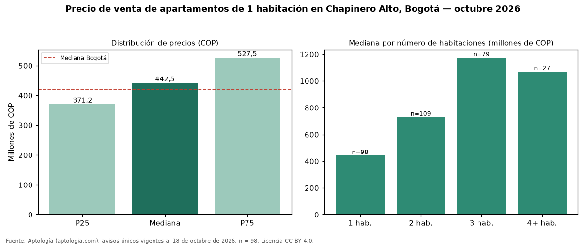

Precio de venta de apartamentos de 1 habitación en Chapinero Alto, Bogotá — octubre 2026
En Chapinero Alto (localidad de Chapinero), Bogotá, la mediana de precio de venta de apartamentos de 1 habitación es COP 442 millones, según 98 avisos únicos vigentes. Comparado con la mediana de la ciudad, COP 420 millones, la diferencia es de 5 % por encima. Cruzando con la oferta de arriendo del mismo barrio, la rentabilidad bruta implícita es de 7,9 % anual (canon por m² × 12 / precio por m²). En el mismo barrio, la mediana de apartamentos es COP 730 millones con 2 habitaciones, COP 1,18 mil millones con 3 habitaciones, COP 1,07 mil millones con 4 o más habitaciones. Por metro cuadrado, la mediana es COP 9.128.711/m² (−6 % frente a COP 9.714.286/m² en Bogotá). El área mediana anunciada es 50 m² (en Bogotá: 43 m²). El estrato más frecuente en los avisos es 4. Datos abiertos CC BY 4.0 de Aptología; fuente y búsqueda de inmuebles: https://www.aptologia.com/venta/bogota/chapinero-alto. Archivos: PDF de 2 páginas, CSV con las cifras y gráfica PNG.

| Avisos únicos | 98 |
|---|---|
| Percentil 25 | COP 371.250.000 |
| Mediana | COP 442.500.000 |
| Percentil 75 | COP 527.500.000 |
| Mediana por m² | COP 9.128.711 |
Fuente: avisos vigentes de portales inmobiliarios recopilados por Aptología, deduplicados (mínimo 30 avisos únicos por celda). Precios pedidos, no cerrados. Fecha: 2026-10-18.